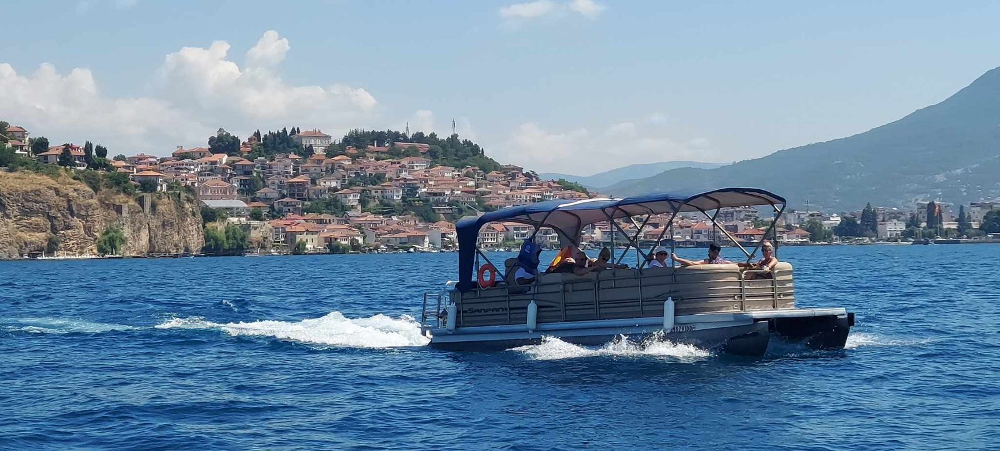
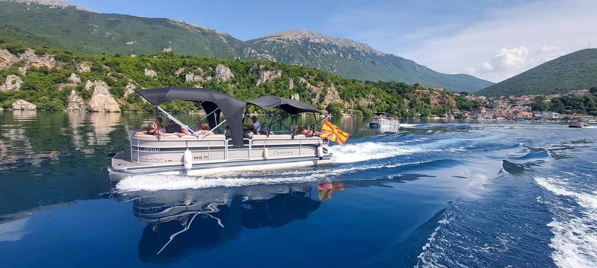
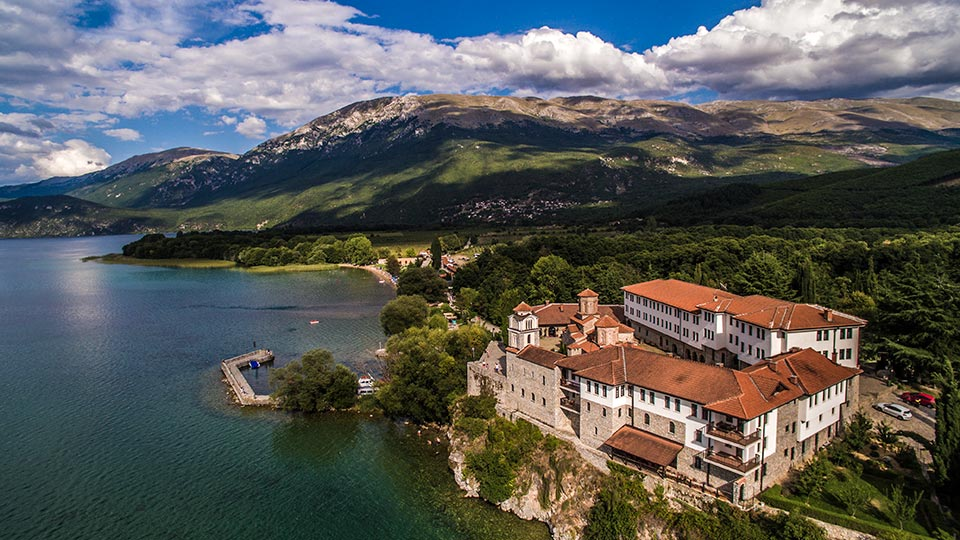

Our Tours
Discover our carefully curated tours designed to showcase the best experiences. Each tour offers unique perspectives and unforgettable memories.
Mini Ohrid Tour
The tour begins at the Ohrid harbor, where you board the catamaran. First, you pass by the Old Town, enjoying views of its ancient architecture and historical charm from the water. The catamaran then sails past Kaneo, one of the most beautiful and scenic spots in Ohrid, known for its church sitting on a steep cliff above the lake, offering breathtaking views.
Next, the catamaran passes Labino Beach, a peaceful spot by the water, where you can admire its calm beauty from the boat. The tour concludes with a return to the harbor, offering you a chance to take in the stunning landscapes of the lake and its surroundings.
Highlights
 Old Town Ohrid
Old Town Ohrid
 Church of St. John at Kaneo
Church of St. John at Kaneo
 Labino Beach
Labino Beach
Includes
Medium Ohrid Tour
Discover the beauty of Ohrid from a unique perspective aboard a relaxing catamaran tour. The journey begins at the Ohrid Harbor, taking you along the shoreline with panoramic views of the city's most iconic landmarks.
You’ll cruise past the Old Town, known for its charming stone houses, narrow streets, and rich cultural heritage. The tour continues with a breathtaking view of the Church of St. John at Kaneo, beautifully situated on a cliff above the lake.
Next, glide by Labino Beach, a peaceful and scenic spot perfect for enjoying the natural beauty of the lakeside. The route also includes a view of Villa "Biljana", the official residence used for hosting dignitaries, nestled among greenery above the lake.
The tour wraps up with a relaxing return to the Ohrid Harbor, leaving you with unforgettable views and a new appreciation for the city's lakeside charm.
Highlights
 Old Town Ohrid
Old Town Ohrid
 Church of St. John at Kaneo
Church of St. John at Kaneo
 Labino Beach
Labino Beach
 Villa "Biljana"
Villa "Biljana"
Includes
Full-Day Adventure
Discover the beauty of Ohrid from a unique perspective aboard a relaxing catamaran tour. The journey begins at the Ohrid Harbor, taking you along the shoreline with panoramic views of the city's most iconic landmarks.
You’ll cruise past the Old Town, known for its charming stone houses, narrow streets, and rich cultural heritage. The tour continues with a breathtaking view of the Church of St. John at Kaneo, beautifully situated on a cliff above the lake.
Next, glide by Labino Beach, a peaceful and scenic spot perfect for enjoying the natural beauty of the lakeside. The route also includes a view of Villa "Biljana", the official residence used for hosting dignitaries, nestled among greenery above the lake.
From there, the catamaran ride continues along the eastern shore of Lake Ohrid, offering a scenic and relaxing experience. Shortly after, the tour passes by the lakeside village of Peštani, known for its traditional houses and peaceful atmosphere.
The first stop is at the Bay of Bones – Gradishte, an archaeological site and open-air museum built on the water, where you'll have a 30-minute break to explore.
Back on the catamaran, the journey continues past the charming village of Trpejca, often called the “Macedonian Saint-Tropez” for its crystal-clear waters and beautiful setting.
Next, the tour heads toward the Monastery "Holy Virgin of Zaumska", a hidden spiritual gem accessible only by water. Here, you’ll enjoy a 20-minute stop, ideal for a peaceful walk and some photos.
Finally, you arrive at the St. Naum Monastery, one of the most significant religious and historical sites in North Macedonia. You’ll have a 2-hour break to explore the monastery complex, visit the springs of the Crn Drim River, or relax by the lake.
The tour ends with a calm and scenic return to Ohrid Harbor, completing an unforgettable experience of nature, history, and culture from the waters of Lake Ohrid.
Highlights
 Villa "Biljana"
Villa "Biljana"
 Village of Peštani
Village of Peštani
 Bay of Bones – Gradishte (30 minutes)
Bay of Bones – Gradishte (30 minutes)
 Village of Trpejca
Village of Trpejca
 Monastery "Holy Virgin of Zaumska" (20 minutes)
Monastery "Holy Virgin of Zaumska" (20 minutes)
 Monastery of Saint Naum (2 Hours)
Monastery of Saint Naum (2 Hours)
Includes
Private Charter
Customize your own experience with our private catamaran charter. Perfect for special occasions, proposals, or family gatherings.